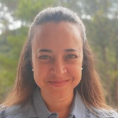

Molka Tounsi Dhouib
 Contract researcher, post-doctoral fellow at INRIA, Sophia Antipolis.
PhD thesis defended on March 26, 2021 at University Côte d’Azur
download resume Contract researcher, post-doctoral fellow at INRIA, Sophia Antipolis.
PhD thesis defended on March 26, 2021 at University Côte d’Azur
download resumeInformation extraction
Relational data base
XML
semantic web